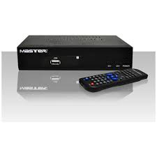

*****Decodificador*****
Ir a la navegaciónIr a la búsqueda
Un decodificador o descodificador es un circuito combinacional, cuya función es inversa a la del codificador, es decir, convierte un código binario de entrada (natural, BCD, etc.) de N bits de entrada y M líneas de salida (N puede ser cualquier entero y M es un entero menor o igual a 2N), tales que cada línea de salida será activada para una sola de las combinaciones posibles de entrada. Normalmente, estos circuitos suelen encontrarse como decodificador / demultiplexor. Esto es debido a que un demultiplexor puede comportarse como un decodificador.
Si por ejemplo se tiene un decodificador de 2 entradas con 22=4 salidas, su funcionamiento sería el que se indica en la siguiente tabla, donde se ha considerado que las salidas se activen con un "uno" lógico:

Decodificador de 2 a 4 líneas.
Tabla de verdad para el decodificador de 2 a 4 líneas
Entradas Salidas
A1 A0 D3 D2 D1 D0
0 0 0 0 0 1
0 1 0 0 1 0
1 0 0 1 0 0
1 1 1 0 0 0
Un tipo de decodificador muy empleado es el de siete segmentos. Este circuito decodifica la información de entrada en BCD a un código de siete segmentos adecuado para que se muestre en un visualizador de siete segmentos.
Aplicaciones del Decodificador
Su función principal es la de direccionar espacios de memoria. Un decodificador de N < es capaz de direccionar 2N espacios de memoria.
Para poder direccionar 1Kib de memoria se necesitarían 10 bits, ya que la cantidad de salidas seria 210, igual a 1024.
De esta manera:
Con 20 bits se tienen 220 lo que equivale a 1Mib.
Con 30 bits se tienen 230 lo que equivale a 1Gib.
*****Definición de ALU*****
Definimos genéricamente a la unidad ALU (por sus siglas en inglés Arithmetic Logic Unit) como una de las unidades que forman parte de la Unidad Central de Procesos (es decir, del Procesador, Microprocesador o CPU - Central Processor Unit, por sus siglas en inglés) mediante la cual es posible realizar una gran cantidad de operaciones aritméticas básicas (Suma, Resta, División y Multiplicación)
además de realizar algunas operaciones Lógicas (Yes, Or, Not, And - Es decir, si; y, o, no) entre dos números o dos conjuntos de números.
En informática, la Unidad Aritmética Lógica forma parte del circuito digital del procesador indefectiblemente, teniendo además presencia en otros Circuitos Electrónicos que necesiten realizar estas operaciones, teniendo por ejemplo la utilización de un Reloj Digital, donde estos cálculos lógicos se basan en dos funcionalidades básicas:
Sumar de a 1 al tiempo actual (para los Segundos, Minutos y las Horas)
Comprobación de la activación o no activación del sonido de la alarma
Cambio de Hora y Minutos de acuerdo al sistema hexadecimal
Pero esta unidad es generalmente utilizada en circuitos de alta complejidad, cubriendo no solo operaciones matemáticas simples, sino una gran cantidad de cálculos por segundos, siendo en el caso de los últimos aquellos que son conocidos como Microprocesadores, y que como hemos dicho, son el cerebro de un ordenador y te toda la información que se procesa a través de él.
Es en estos pequeños y complejos dispositivos que encontramos los siguientes componentes:
Dispositivos de Adición: Se encargan de realizar las anteriormente mencionadas operaciones aritméticas
Registros: Son los que contienen los Operandos que permiten realizar las operaciones, siendo aportados estos por la Unidad de Control
Resultados Parciales: Fragmentos de cálculos que fueron realizados
Resultados Finales: Resultados propiamente dichos de los cálculos efectuados
Control de Cálculo: Dispositivo que se encarga de controlar, redirigir y corregir los errores que se puedan haber cometido en las operaciones realizadas
Hemos mencionado en este listado a la Unidad de Control, y debemos definirla como un dispositivo que se encarga de envíar a la Arichmetic Logic Unit todas las órdenes y operaciones que debe realizar, además de transportar los Resultados Finales que ha obtenido hacia otros componentes.
De este modo, podemos definir el funcionamiento de la siguiente manera:
Unidad de Control: Emite las acciones a efectuar
Unidad Aritmético Lógica: Procesa los datos recibidos y envía los registros
Unidad de Control:Analiza los resultados obtenidos y los envía a otros dispositivos
*****Multiplexores*****
Los multiplexores son circuitos combinacionales con varias entradas y una única salida de datos. Están dotados de entradas de control capaces de seleccionar una, y solo una, de las entradas de datos para permitir su transmisión desde la entrada seleccionada hacia dicha salida.
S En el campo de la electrónica el multiplexor se utiliza como dispositivo que puede recibir varias entradas y transmitirlas por un medio de transmisión compartido. Para ello lo que hace es dividir el medio de transmisión en múltiples canales, para que varios nodos puedan comunicarse al mismo tiempo.
Una señal que está multiplexada debe demultiplexarse en el otro extremo.
Según la forma en que se realice esta división del medio de transmisión, existen varias clases de multiplexación:
Multiplexación por división de frecuencia
Multiplexación por división de tiempo
Multiplexación por división de código
Multiplexación por división de longitud de onda
Diseño en Electrónica Digital
Esquema de un multiplexor 2 a 1. Puede ser comparado a un conmutador controlado.
Estos circuitos combinacionales poseen {\displaystyle 2^{n}} 2^{n} líneas de entrada de datos, una línea de salida y n entradas de selección. Las entradas de selección indican cuál de estas líneas de entrada de datos es la que proporciona el valor a la línea de salida. Cada combinación de las entradas de selección corresponde a una entrada de datos,
y la salida final del multiplexor corresponderá al valor de dicha entrada seleccionada. Para identificar la entrada de selección más significativa, por convenio esta siempre es la que está más arriba (de mostrarse de forma vertical) o más a la izquierda (en horizontal), independientemente de su etiqueta identificatoria, a no ser que se especifique lo contrario.
También se pueden construir multiplexores con mayor número de entradas utilizando multiplexores de menos entradas, utilizando la composición de multiplexores.
En electrónica digital, es usado para el control de un flujo de información que equivale a un conmutador. En su forma más básica se compone de dos entradas de datos (A y B), una salida de datos y una entrada de control.
Cuando la entrada de control se pone a 0 lógico, la señal de datos A es conectada a la salida; cuando la entrada de control se pone a 1 lógico,
la señal de datos B es la que se conecta a la salida. El multiplexor es una aplicación particular de los decodificadores, tal que existe una entrada de habilitación (EN) por cada puerta AND y al final se hace un OR entre todas las salidas de las puertas AND.
La función de un multiplexor da lugar a diversas aplicaciones:
Selector de entradas.
Serializador: Convierte datos desde el formato paralelo al formato serie.
Transmisión multiplexada: Utilizando las mismas líneas de conexión, se transmiten diferentes datos de distinta procedencia
Realización de funciones lógicas: Utilizando inversores y conectando a 0 o 1 las entradas según intereses, se consigue diseñar funciones complejas, de un modo más compacto que con las tradicionales puertas lógicas.
REGRESAR